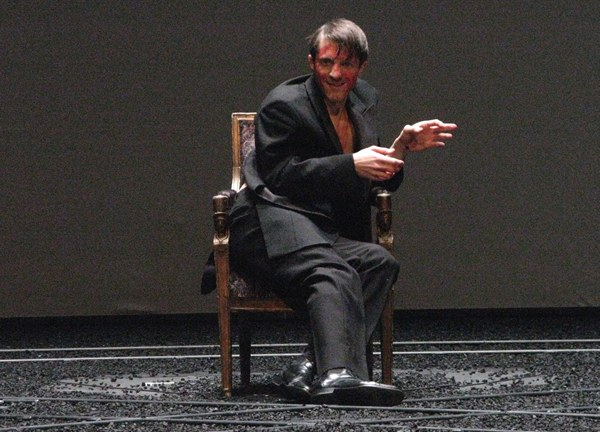
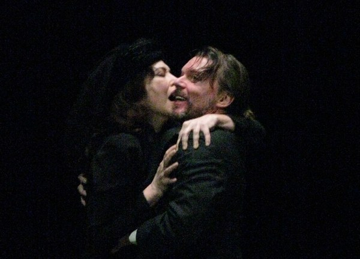
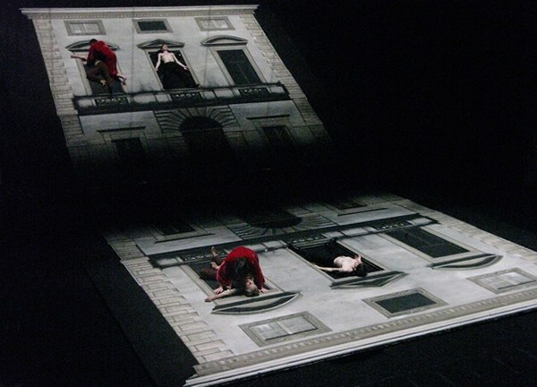

Dall'8 gennaio all'8 febbraio 2009, sul palcoscenico del Théâtre de l'Odéon di Parigi, va in scena Gertrude — Le Cri di Howard Barker nella regia di Giorgio Barberio Corsetti. Cristian Taraborrelli firma le scene: un lavoro che si aggiudica nello stesso anno il Prix du Syndicat de la Critique 2009 come migliore scenografia, e ottiene una nomination al Prix Molière 2009. Anne Alvaro, nel ruolo di Gertrude, vince il Molière come miglior attrice.
L'opera di Barker è una riscrittura iperbolica e violenta dell'Amleto dal punto di vista della madre — quella regina che Shakespeare lascia sempre ai margini, e che Barker porta al centro come desiderio assoluto e grido finale. Il teatro di Barker, il Theatre of Catastrophe, non offre catarsi: porta lo spettatore al limite del proprio statuto morale e l'abbandona lì.
La scenografia di Cristian Taraborrelli traduce questa «catastrofe» in un dispositivo plastico essenziale e violento, costruito attorno al letto-trono regale di Gertrude e a una serie di partizioni mobili che spalancano e richiudono lo spazio della corte. I costumi di Angela Buscemi proseguono lavorando sul cromatismo psicologico. Lo spettacolo è uno degli eventi della stagione parigina 2008-2009 e apre un ciclo Howard Barker all'Odéon.
From 8 January to 8 February 2009, on the stage of the Théâtre de l'Odéon in Paris, Gertrude — The Cry by Howard Barker was staged in a production directed by Giorgio Barberio Corsetti. Cristian Taraborrelli designed the sets: a piece of work that won, the same year, the Prix du Syndicat de la Critique 2009 for best set design, and earned a nomination at the Prix Molière 2009. Anne Alvaro, as Gertrude, won the Molière for best actress.
Barker's play is a hyperbolic and violent rewriting of Hamlet from the mother's point of view — the queen Shakespeare always leaves at the margins, and whom Barker brings to the centre as absolute desire and final cry. Barker's theatre, his Theatre of Catastrophe, offers no catharsis: it leads the spectator to the edge of his own moral status and abandons him there.
Cristian Taraborrelli's scenography translates this «catastrophe» into an essential and violent plastic device, built around Gertrude's royal bed-throne and a series of mobile partitions that open and close the space of the court. Angela Buscemi's costumes continue the work on psychological chromatism. The production is one of the events of the Paris 2008-2009 season and opens an Howard Barker cycle at the Odéon.
Du 8 janvier au 8 février 2009, sur la scène du Théâtre de l'Odéon à Paris, est créé Gertrude — Le Cri de Howard Barker dans la mise en scène de Giorgio Barberio Corsetti. Cristian Taraborrelli signe les décors : un travail qui remporte la même année le Prix du Syndicat de la Critique 2009 du meilleur créateur d'élément scénique, et obtient une nomination au Prix Molière 2009. Anne Alvaro, dans le rôle de Gertrude, remporte le Molière de la meilleure comédienne.
La pièce de Barker est une réécriture hyperbolique et violente d'Hamlet du point de vue de la mère — cette reine que Shakespeare laisse toujours en marge, et que Barker porte au centre comme désir absolu et cri final. Le théâtre de Barker, son Theatre of Catastrophe, n'offre pas de catharsis : il amène le spectateur aux limites de son propre statut moral et l'y abandonne.
La scénographie de Cristian Taraborrelli traduit cette «catastrophe» en un dispositif plastique essentiel et violent, construit autour du lit-trône royal de Gertrude et d'une série de cloisons mobiles qui ouvrent et referment l'espace de la cour. Les costumes d'Angela Buscemi poursuivent le travail sur le chromatisme psychologique. Le spectacle est l'un des événements de la saison parisienne 2008-2009 et ouvre un cycle Howard Barker à l'Odéon.
L'Opera — Gertrude di Howard Barker
Gertrude — The Cry, scritta da Howard Barker nel 2002 e creata in inglese dalla sua compagnia The Wrestling School, è una delle scritture più potenti del teatro contemporaneo europeo. Riscrive lo Shakespeare di Amleto da una prospettiva sospesa prima e dopo la tragedia: comincia esattamente dove Shakespeare lascia in penombra — il tradimento di Gertrude col cognato Claudio, l'omicidio del re — e ne fa il proprio centro.
In Shakespeare, Gertrude è un personaggio quasi muto, descritto sempre attraverso lo sguardo del figlio. In Barker, la regina diventa desiderio assoluto, un grido che attraversa il palco come una dichiarazione di guerra alla decenza borghese. La vera tragedia non è più quella di Amleto: è quella di una donna che sceglie l'eros contro la morale, e che paga questa scelta col sangue dei figli.
È un testo difficile, deliberatamente scomodo. Barker rifiuta ogni pacificazione, ogni morale, ogni catarsi: il pubblico esce dalla sala turbato, mai sollevato. Una drammaturgia anti-aristotelica che ha cambiato il modo di pensare il teatro tragico in Europa.
Gertrude — The Cry, written by Howard Barker in 2002 and created in English by his company The Wrestling School, is one of the most powerful pieces of writing in contemporary European theatre. It rewrites Shakespeare's Hamlet from a perspective suspended before and after the tragedy: it begins exactly where Shakespeare leaves things in shadow — Gertrude's betrayal with her brother-in-law Claudius, the murder of the king — and turns that into its centre.
In Shakespeare, Gertrude is an almost mute character, always described through her son's gaze. In Barker, the queen becomes absolute desire, a cry crossing the stage like a declaration of war against bourgeois decency. The real tragedy is no longer Hamlet's: it is that of a woman who chooses eros against morality, and pays for the choice with her children's blood.
It is a difficult text, deliberately uncomfortable. Barker refuses any pacification, any moral, any catharsis: the audience leaves the theatre disturbed, never relieved. An anti-Aristotelian dramaturgy that changed the way tragic theatre is thought in Europe.
Gertrude — The Cry, écrite par Howard Barker en 2002 et créée en anglais par sa compagnie The Wrestling School, est l'une des écritures les plus puissantes du théâtre contemporain européen. Elle réécrit l'Hamlet de Shakespeare depuis une perspective suspendue avant et après la tragédie : elle commence précisément là où Shakespeare laisse les choses dans l'ombre — la trahison de Gertrude avec son beau-frère Claudius, le meurtre du roi — et en fait son centre.
Chez Shakespeare, Gertrude est un personnage presque muet, toujours décrit à travers le regard de son fils. Chez Barker, la reine devient désir absolu, un cri qui traverse le plateau comme une déclaration de guerre à la décence bourgeoise. La véritable tragédie n'est plus celle d'Hamlet : c'est celle d'une femme qui choisit l'éros contre la morale, et qui paie ce choix du sang de ses enfants.
C'est un texte difficile, délibérément inconfortable. Barker refuse toute pacification, toute morale, toute catharsis : le public sort de la salle troublé, jamais soulagé. Une dramaturgie anti-aristotélicienne qui a changé la façon de penser le théâtre tragique en Europe.
Mini-bio — Howard Barker (1946–)
Drammaturgo, poeta e regista inglese nato a Londra nel 1946, Howard Barker è il fondatore del Theatre of Catastrophe: un teatro che, secondo le sue stesse parole, «intende destabilizzare l'atteggiamento morale del pubblico, non rinforzarlo». Dagli anni Settanta scrive una serie di testi violenti, ipnotici, che riprendono e dilatano i temi della tragedia classica e shakespeariana — l'invidia, il desiderio, il potere, il dolore — portandoli a un grado di complessità morale che la BBC e il West End rifiuteranno spesso di mettere in scena.
Nel 1988 fonda The Wrestling School, una compagnia interamente dedicata al suo lavoro — uno dei pochi casi nel teatro inglese contemporaneo. Tra i suoi testi più importanti: Scenes from an Execution, Victory, The Possibilities, The Castle, Gertrude — The Cry (2002). Il pubblico francese lo riceve prima e meglio di quello inglese: ed è in Francia che, all'Odéon di Parigi, si apre nel 2009 un grande ciclo Barker firmato da Corsetti e Taraborrelli.
English playwright, poet and director, born in London in 1946, Howard Barker is the founder of the Theatre of Catastrophe: a theatre that, in his own words, «aims to destabilize the moral attitude of the public rather than reinforce it». From the 1970s on he wrote a series of violent, hypnotic texts that resume and expand the themes of classical and Shakespearean tragedy — envy, desire, power, pain — pushing them to a degree of moral complexity that the BBC and the West End would often refuse to stage.
In 1988 he founded The Wrestling School, a company entirely devoted to his own work — one of the rare cases in contemporary English theatre. His major plays include Scenes from an Execution, Victory, The Possibilities, The Castle, Gertrude — The Cry (2002). The French audience received him earlier and better than the English: it is in France that, at the Odéon in Paris, a great Barker cycle directed by Corsetti and designed by Taraborrelli opens in 2009.
Dramaturge, poète et metteur en scène anglais né à Londres en 1946, Howard Barker est le fondateur du Theatre of Catastrophe : un théâtre qui, selon ses propres mots, «vise à déstabiliser l'attitude morale du public plutôt qu'à la renforcer». Dès les années 1970, il écrit une série de textes violents, hypnotiques, qui reprennent et déploient les thèmes de la tragédie classique et shakespearienne — l'envie, le désir, le pouvoir, la douleur — en les portant à un degré de complexité morale que la BBC et le West End refuseront souvent de mettre en scène.
En 1988 il fonde The Wrestling School, compagnie entièrement consacrée à son œuvre — un des rares cas dans le théâtre anglais contemporain. Parmi ses pièces majeures : Scènes d'une exécution, Victoire, Les Possibilités, Le Château, Gertrude — Le Cri (2002). Le public français le reçoit plus tôt et mieux que le public anglais : c'est en France que, à l'Odéon, s'ouvre en 2009 un grand cycle Barker mis en scène par Corsetti et scénographié par Taraborrelli.
I Premi — Prix Syndicat e Molière
Il Prix du Syndicat de la Critique è il più importante riconoscimento della critica teatrale e cinematografica francese. Fondato dal Syndicat de la Critique de Cinéma, de Théâtre, de Musique et de Danse — un'associazione che riunisce centinaia di critici professionisti francesi — il Prix funziona come l'equivalente francese degli italiani Premi Ubu o degli inglesi Critics' Circle Theatre Awards. La categoria «Meilleur créateur d'élément scénique» premia ogni anno la migliore creazione plastica della stagione teatrale francese: scenografia, costume, luce, video o suono.
Cristian Taraborrelli vince il Prix del Syndicat de la Critique 2008-2009 per la scenografia di Gertrude — Le Cri: è un riconoscimento di livello internazionale che colloca lo studio Taraborrelli fra le firme di scenografia più importanti d'Europa. Per uno scenografo italiano, vincere a Parigi — capitale storica della messa in scena europea — ha un peso speciale.
Lo spettacolo riceve anche una nomination al Prix Molière 2009, l'equivalente francese dei Tony Award americani: il più importante riconoscimento del teatro di prosa francese. Anne Alvaro, nel ruolo di Gertrude, vince il Molière come miglior attrice. Lo spettacolo viene così consacrato due volte: dalla critica e dall'industria teatrale francese.
The Prix du Syndicat de la Critique is the most important award of the French theatre and cinema criticism. Founded by the Syndicat de la Critique de Cinéma, de Théâtre, de Musique et de Danse — an association that gathers hundreds of French professional critics — the Prix functions as the French equivalent of Italy's Ubu Prizes or England's Critics' Circle Theatre Awards. The «Best Stage Element Creator» category awards each year the best plastic creation of the French theatrical season: set, costume, light, video or sound.
Cristian Taraborrelli won the Prix du Syndicat de la Critique 2008-2009 for the scenography of Gertrude — Le Cri: an international recognition that places the Taraborrelli studio among the most important set-design names in Europe. For an Italian scenographer, winning in Paris — the historical capital of European staging — has a special weight.
The production also received a nomination at the Prix Molière 2009, the French equivalent of the American Tony Awards: the most important award of French drama theatre. Anne Alvaro, as Gertrude, won the Molière for best actress. The production is thus consecrated twice: by the critical community and by the French theatrical industry.
Le Prix du Syndicat de la Critique est la plus importante récompense de la critique théâtrale et cinématographique française. Fondé par le Syndicat de la Critique de Cinéma, de Théâtre, de Musique et de Danse — une association qui rassemble des centaines de critiques professionnels français — le Prix fonctionne comme l'équivalent français des Prix Ubu italiens ou des Critics' Circle Theatre Awards anglais. La catégorie «Meilleur créateur d'élément scénique» récompense chaque année la meilleure création plastique de la saison théâtrale française : décor, costume, lumière, vidéo ou son.
Cristian Taraborrelli remporte le Prix du Syndicat de la Critique 2008-2009 pour la scénographie de Gertrude — Le Cri : c'est une reconnaissance internationale qui place le studio Taraborrelli parmi les signatures de scénographie les plus importantes d'Europe. Pour un scénographe italien, gagner à Paris — capitale historique de la mise en scène européenne — a un poids tout particulier.
Le spectacle reçoit aussi une nomination au Prix Molière 2009, équivalent français des Tony Awards américains : la plus importante récompense du théâtre de prose français. Anne Alvaro, dans le rôle de Gertrude, remporte le Molière de la meilleure comédienne. Le spectacle est ainsi consacré deux fois : par la critique et par l'industrie théâtrale française.
La Visione — Scenografia premiata
La scenografia di Cristian Taraborrelli per Gertrude — Le Cri è un dispositivo essenziale e violento: una scena nera, profonda, attraversata da partizioni mobili che si aprono e richiudono come tende chirurgiche. Al centro dello spazio, il letto-trono regale di Gertrude — oggetto-soglia tra il sesso e il potere, tra la stanza coniugale e la sala del trono. È il punto attorno a cui ruota tutta la tragedia barkeriana.
Le partizioni mobili scorrono in tracce orizzontali e verticali, creando improvvise apparizioni dei personaggi e altrettanto improvvisi nascondimenti. La corte di Elsinore non è un luogo: è un regime di visibilità, un teatro chiuso dove ogni gesto dei sovrani è insieme spiato e nascosto. La luce, fredda e radente, scolpisce gli attori come marmi violenti.
I costumi di Angela Buscemi — collaboratrice storica dello studio Taraborrelli — lavorano sul nero, sul rosso sangue, sull'oro spento. Niente più di un riferimento all'epoca rinascimentale: il guardaroba di Gertrude è quello assoluto del desiderio, fatto di stoffe pesanti che la stringono e vesti che si aprono come ferite. La giuria del Syndicat de la Critique riconoscerà in questo dispositivo plastico la migliore creazione scenica della stagione 2008-2009.
Cristian Taraborrelli's scenography for Gertrude — Le Cri is an essential and violent device: a black, deep stage crossed by mobile partitions that open and close like surgical curtains. At the centre of the space, Gertrude's regal bed-throne — a threshold object between sex and power, between marital chamber and throne room. It is the point around which all Barker's tragedy revolves.
The mobile partitions slide along horizontal and vertical tracks, creating sudden appearances of the characters and equally sudden disappearances. The court of Elsinore is not a place: it is a regime of visibility, a closed theatre where every gesture of the sovereigns is at once spied upon and hidden. The cold, raking light sculpts the actors like violent marble.
Angela Buscemi's costumes — she is a longstanding collaborator of the Taraborrelli studio — work on black, blood-red, dulled gold. Nothing more of a reference to the Renaissance era: Gertrude's wardrobe is that absolute one of desire, made of heavy fabrics that tighten her and dresses that open like wounds. The Syndicat de la Critique jury will recognise in this plastic device the best stage creation of the 2008-2009 season.
La scénographie de Cristian Taraborrelli pour Gertrude — Le Cri est un dispositif essentiel et violent : un plateau noir, profond, traversé par des cloisons mobiles qui s'ouvrent et se referment comme des rideaux chirurgicaux. Au centre de l'espace, le lit-trône royal de Gertrude — objet-seuil entre le sexe et le pouvoir, entre la chambre conjugale et la salle du trône. C'est le point autour duquel tourne toute la tragédie barkerienne.
Les cloisons mobiles glissent sur des rails horizontaux et verticaux, créant des apparitions soudaines des personnages et des disparitions tout aussi soudaines. La cour d'Elseneur n'est pas un lieu : c'est un régime de visibilité, un théâtre clos où chaque geste des souverains est à la fois épié et caché. La lumière, froide et rasante, sculpte les acteurs comme des marbres violents.
Les costumes d'Angela Buscemi — collaboratrice de longue date du studio Taraborrelli — travaillent sur le noir, le rouge sang, l'or éteint. Rien de plus d'une référence à l'époque renaissante : la garde-robe de Gertrude est celle, absolue, du désir, faite d'étoffes lourdes qui la serrent et de robes qui s'ouvrent comme des blessures. Le jury du Syndicat de la Critique reconnaîtra dans ce dispositif plastique la meilleure création scénique de la saison 2008-2009.
Galleria — Foto di scena



Théâtre de l'Odéon — mini-storia
Inaugurato nel 1782 per ospitare la Comédie-Française, il Théâtre de l'Odéon di Parigi è uno dei sei teatri nazionali francesi e il più importante teatro di prosa di Parigi accanto alla Comédie-Française stessa. Sito nell'omonima piazza del VI arrondissement, l'edificio neoclassico firmato da Marie-Joseph Peyre e Charles De Wailly ha visto andare in scena le prime di Beaumarchais, di Hugo, di Claudel.
Dal 1990 il teatro ha statuto di Théâtre de l'Europe: missione esplicita di ospitare le grandi produzioni internazionali. Sotto la direzione di Olivier Py e poi di Stéphane Braunschweig, l'Odéon diventa la sede di residenze e creazioni di Romeo Castellucci, Krystian Lupa, Thomas Ostermeier, Krzysztof Warlikowski. La produzione di Gertrude — Le Cri nel gennaio 2009 si colloca esattamente in questa linea di scelte coraggiose, ed apre un ciclo dedicato a Howard Barker.
Inaugurated in 1782 to host the Comédie-Française, the Théâtre de l'Odéon in Paris is one of the six French national theatres and the most important drama theatre in Paris alongside the Comédie-Française itself. Located in the eponymous square of the VIth arrondissement, the neoclassical building designed by Marie-Joseph Peyre and Charles De Wailly has seen the premieres of Beaumarchais, Hugo, Claudel.
Since 1990 the theatre has held the status of Théâtre de l'Europe: an explicit mission to host great international productions. Under the direction of Olivier Py and then Stéphane Braunschweig, the Odéon becomes the seat of residencies and creations by Romeo Castellucci, Krystian Lupa, Thomas Ostermeier, Krzysztof Warlikowski. The production of Gertrude — Le Cri in January 2009 sits exactly in this line of bold choices, and opens a cycle devoted to Howard Barker.
Inauguré en 1782 pour accueillir la Comédie-Française, le Théâtre de l'Odéon est l'un des six théâtres nationaux français et le plus important théâtre de prose de Paris aux côtés de la Comédie-Française elle-même. Situé sur la place éponyme du VIe arrondissement, le bâtiment néoclassique signé par Marie-Joseph Peyre et Charles De Wailly a vu les créations de Beaumarchais, de Hugo, de Claudel.
Depuis 1990 le théâtre porte le statut de Théâtre de l'Europe : mission explicite d'accueillir les grandes productions internationales. Sous la direction d'Olivier Py puis de Stéphane Braunschweig, l'Odéon devient le siège de résidences et de créations de Romeo Castellucci, Krystian Lupa, Thomas Ostermeier, Krzysztof Warlikowski. La production de Gertrude — Le Cri en janvier 2009 s'inscrit exactement dans cette ligne de choix audacieux, et ouvre un cycle consacré à Howard Barker.
La Collaborazione — Cristian × Corsetti
Dieci anni dopo il Processo di Kafka che aveva vinto il Premio Ubu nel 1999, Gertrude — Le Cri è il secondo momento di consacrazione internazionale del sodalizio fra Cristian Taraborrelli e Giorgio Barberio Corsetti. Se il Processo aveva consacrato la coppia in Italia, il Cri la consacra in Francia, ovvero nella culla storica della messa in scena europea moderna.
Sono i due lavori di prosa più importanti della loro collaborazione — entrambi premiati, entrambi al cuore di un'idea di teatro che pensa la scena come dispositivo plastico abitato. Su queste fondamenta nasceranno poi le grandi produzioni d'opera lirica condivise: Turandot e Macbeth alla Scala (2011, 2013), La Belle Hélène al Mariinskij (2014), Pagliacci-AR (2017), Le Mariage de Figaro a Liegi e Tours (2017-2018).
Ten years after Kafka's The Trial, which had won the Ubu Prize in 1999, Gertrude — Le Cri is the second moment of international consecration of the partnership between Cristian Taraborrelli and Giorgio Barberio Corsetti. If The Trial had consecrated the duo in Italy, Le Cri consecrates it in France — that is, in the historical cradle of modern European staging.
These are the two most important drama works of their collaboration — both award-winning, both at the heart of an idea of theatre that thinks of the stage as an inhabited plastic device. On these foundations the great shared opera productions will be born: Turandot and Macbeth at La Scala (2011, 2013), La Belle Hélène at the Mariinsky (2014), Pagliacci-AR (2017), Le Mariage de Figaro at Liège and Tours (2017-2018).
Dix ans après le Procès de Kafka qui avait remporté le Prix Ubu en 1999, Gertrude — Le Cri est le deuxième moment de consécration internationale de la collaboration entre Cristian Taraborrelli et Giorgio Barberio Corsetti. Si Le Procès avait consacré le duo en Italie, Le Cri le consacre en France — c'est-à-dire dans le berceau historique de la mise en scène européenne moderne.
Ce sont les deux travaux de prose les plus importants de leur collaboration — tous deux primés, tous deux au cœur d'une idée de théâtre qui pense la scène comme un dispositif plastique habité. Sur ces fondations naîtront ensuite les grandes productions lyriques partagées : Turandot et Macbeth à la Scala (2011, 2013), La Belle Hélène au Mariinsky (2014), Pagliacci-AR (2017), Le Mariage de Figaro à Liège et Tours (2017-2018).
Curiosità
Anne Alvaro, doppio premio. L'attrice Anne Alvaro, già due volte vincitrice del César al cinema, vince il Molière 2009 come miglior attrice proprio per Gertrude — Le Cri: una delle interpretazioni più intense della stagione parigina. Per Barker, il personaggio di Gertrude richiede un'attrice capace di tenere il palco da sola contro tutta la corte.
Theatre of Catastrophe. Howard Barker conia il termine alla fine degli anni Settanta per opporsi al teatro «rassicurante»: la catastrofe non è tema, è struttura. Il pubblico deve uscire peggio di come è entrato. È una posizione anti-aristotelica radicale, e fa di Barker uno dei drammaturghi più controversi del teatro contemporaneo.
Un ciclo Barker all'Odéon. Gertrude — Le Cri apre un ciclo dedicato a Howard Barker che il Théâtre de l'Odéon porta avanti per tutta la stagione 2008-2009. Per il pubblico francese, è la consacrazione dell'autore inglese: l'Odéon, casa storica del repertorio classico, sceglie di dedicargli un'intera programmazione.
L'Odéon bruciato due volte. Il Théâtre de l'Odéon che oggi conosciamo è in realtà la terza versione dell'edificio: il primo bruciò nel 1799, il secondo nel 1818. La sala attuale, ricostruita da Pierre Thomas Baraguay nel 1819, ospita 800 spettatori e ha una delle migliori acustiche di Parigi.
Maggio '68 all'Odéon. Il 15 maggio 1968 il teatro fu occupato dagli studenti della rivolta parigina e divenne uno dei principali centri di assemblea del movimento. La direzione di Jean-Louis Barrault non si oppose all'occupazione: Barrault perse il posto. L'Odéon porta nella sua memoria politica anche questo — un teatro nazionale che è diventato per qualche settimana l'agorà del Maggio francese.
Anne Alvaro, double prize. The actress Anne Alvaro, already a two-time César winner in cinema, wins the 2009 Molière for best actress precisely for Gertrude — Le Cri: one of the most intense performances of the Parisian season. For Barker, the character of Gertrude demands an actress capable of holding the stage alone against the whole court.
Theatre of Catastrophe. Howard Barker coins the term at the end of the Seventies to oppose «reassuring» theatre: catastrophe is not theme, it is structure. The audience must leave worse than they entered. It is a radical anti-Aristotelian position, and makes Barker one of the most controversial playwrights of contemporary theatre.
A Barker cycle at the Odéon. Gertrude — Le Cri opens a cycle devoted to Howard Barker that the Théâtre de l'Odéon carries on throughout the 2008-2009 season. For the French audience, it is the consecration of the English writer: the Odéon, historical home of classical repertoire, chooses to dedicate him an entire programme.
The Odéon burned twice. The Théâtre de l'Odéon we know today is in fact the third version of the building: the first burned in 1799, the second in 1818. The current hall, rebuilt by Pierre Thomas Baraguay in 1819, holds 800 spectators and has one of the best acoustics in Paris.
May '68 at the Odéon. On 15 May 1968 the theatre was occupied by the students of the Paris uprising and became one of the principal assembly centres of the movement. Jean-Louis Barrault's direction did not oppose the occupation: Barrault lost his post. The Odéon carries this in its political memory too — a national theatre that became, for a few weeks, the agora of the French May.
Anne Alvaro, double prix. La comédienne Anne Alvaro, déjà deux fois lauréate du César au cinéma, remporte le Molière 2009 de la meilleure comédienne précisément pour Gertrude — Le Cri : l'une des interprétations les plus intenses de la saison parisienne. Chez Barker, le personnage de Gertrude exige une actrice capable de tenir le plateau seule contre toute la cour.
Theatre of Catastrophe. Howard Barker forge le terme à la fin des années 1970 pour s'opposer au théâtre «rassurant» : la catastrophe n'est pas thème, c'est structure. Le public doit sortir plus mal qu'il n'est entré. C'est une position radicalement anti-aristotélicienne, et fait de Barker l'un des dramaturges les plus controversés du théâtre contemporain.
Un cycle Barker à l'Odéon. Gertrude — Le Cri ouvre un cycle consacré à Howard Barker que le Théâtre de l'Odéon poursuit durant toute la saison 2008-2009. Pour le public français, c'est la consécration de l'auteur anglais : l'Odéon, maison historique du répertoire classique, choisit de lui consacrer une programmation entière.
L'Odéon brûlé deux fois. Le Théâtre de l'Odéon que nous connaissons aujourd'hui est en réalité la troisième version du bâtiment : le premier brûla en 1799, le deuxième en 1818. La salle actuelle, reconstruite par Pierre Thomas Baraguay en 1819, accueille 800 spectateurs et possède l'une des meilleures acoustiques de Paris.
Mai 68 à l'Odéon. Le 15 mai 1968 le théâtre fut occupé par les étudiants de la révolte parisienne et devint l'un des principaux centres d'assemblée du mouvement. La direction de Jean-Louis Barrault ne s'opposa pas à l'occupation : Barrault perdit son poste. L'Odéon porte cela aussi dans sa mémoire politique — un théâtre national devenu, pendant quelques semaines, l'agora du Mai français.
I Collaboratori
Regia
Giorgio Barberio Corsetti
Attore, drammaturgo e regista, fondatore della compagnia La Gaia Scienza nel 1976 e poi di Fattore K. nel 2001. Direttore della Sezione Teatro della Biennale di Venezia dal 1999, dal 2019 al 2024 al Teatro di Roma. Premio Ubu 1999 con Il Processo di Kafka. Lavora sul confine tra teatro, video, danza e arti visive, e firma una collaborazione ventennale con Cristian Taraborrelli che attraversa Kafka, Barker, Verdi, Puccini.
Gertrude
Anne Alvaro
Attrice francese di origine spagnola (1951), formata al Conservatoire National Supérieur di Parigi. Due volte vincitrice del César (Le Goût des autres, 2001; Le Bruit des glaçons, 2011) e del Molière 2009 come miglior attrice proprio per la Gertrude di Barker. Una delle figure più rispettate del teatro francese contemporaneo.
Costumi
Angela Buscemi
Costumista e illustratrice, collaboratrice storica dello studio Taraborrelli per il disegno dei figurini e dei costumi. Per Gertrude — Le Cri firma un guardaroba che lavora sul nero, sul rosso sangue, sull'oro spento — senza mai cadere nella citazione rinascimentale. La stessa squadra costumi tornarà con Taraborrelli nel Macbeth alla Scala (2013), Pagliacci-AR (2017) e in molte altre produzioni internazionali.
Cast
Luc-Antoine Diquéro (Claudius), Christophe Maltot (Hamlet), John Arnold (Cascan), Francine Bergé (Isola), Cécile Bournay (Ragusa), Jean-Charles Clichet (Albert) — un ensemble di interpreti francesi della grande tradizione di prosa, attivi tra Comédie-Française, Odéon e principali teatri nazionali.
Direction
Giorgio Barberio Corsetti
Actor, playwright and director, founder of La Gaia Scienza in 1976 and of Fattore K. in 2001. Director of the Theatre Section of the Venice Biennale from 1999, from 2019 to 2024 artistic director of the Teatro di Roma. Ubu Prize 1999 for The Trial by Kafka. He works at the frontier of theatre, video, dance and visual arts, and signs a twenty-year collaboration with Cristian Taraborrelli across Kafka, Barker, Verdi, Puccini.
Gertrude
Anne Alvaro
French actress of Spanish origin (1951), trained at the Conservatoire National Supérieur in Paris. Two-time César winner (Le Goût des autres, 2001; Le Bruit des glaçons, 2011) and Molière 2009 winner for best actress, precisely for Barker's Gertrude. One of the most respected figures of contemporary French theatre.
Costumes
Angela Buscemi
Costume designer and illustrator, longstanding collaborator of the Taraborrelli studio for figurino and costume drawing. For Gertrude — Le Cri she signs a wardrobe that works on black, blood-red, dulled gold — never falling into Renaissance citation. The same costumes team will return with Taraborrelli on the Macbeth at La Scala (2013), Pagliacci-AR (2017) and many other international productions.
Cast
Luc-Antoine Diquéro (Claudius), Christophe Maltot (Hamlet), John Arnold (Cascan), Francine Bergé (Isola), Cécile Bournay (Ragusa), Jean-Charles Clichet (Albert) — an ensemble of French actors of the great drama tradition, active between Comédie-Française, Odéon and the main national theatres.
Mise en scène
Giorgio Barberio Corsetti
Acteur, dramaturge et metteur en scène, fondateur de La Gaia Scienza en 1976 puis de Fattore K. en 2001. Directeur de la Section Théâtre de la Biennale de Venise à partir de 1999, de 2019 à 2024 directeur artistique du Teatro di Roma. Prix Ubu 1999 pour Le Procès de Kafka. Il travaille à la frontière du théâtre, de la vidéo, de la danse et des arts visuels, et signe une collaboration de vingt ans avec Cristian Taraborrelli à travers Kafka, Barker, Verdi, Puccini.
Gertrude
Anne Alvaro
Comédienne française d'origine espagnole (1951), formée au Conservatoire National Supérieur de Paris. Deux fois lauréate du César (Le Goût des autres, 2001 ; Le Bruit des glaçons, 2011) et Molière 2009 de la meilleure comédienne précisément pour la Gertrude de Barker. L'une des figures les plus respectées du théâtre français contemporain.
Costumes
Angela Buscemi
Costumière et illustratrice, collaboratrice de longue date du studio Taraborrelli pour le dessin des figurines et des costumes. Pour Gertrude — Le Cri elle signe une garde-robe qui travaille sur le noir, le rouge sang, l'or éteint — sans jamais tomber dans la citation renaissante. La même équipe costumes reviendra avec Taraborrelli sur le Macbeth de la Scala (2013), Pagliacci-AR (2017) et beaucoup d'autres productions internationales.
Distribution
Luc-Antoine Diquéro (Claudius), Christophe Maltot (Hamlet), John Arnold (Cascan), Francine Bergé (Isola), Cécile Bournay (Ragusa), Jean-Charles Clichet (Albert) — un ensemble d'acteurs français de la grande tradition de prose, actifs entre Comédie-Française, Odéon et principaux théâtres nationaux.
Cast Principale
Creative Team
Tags